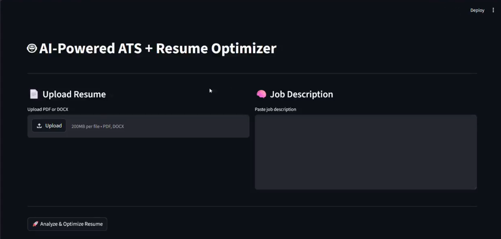
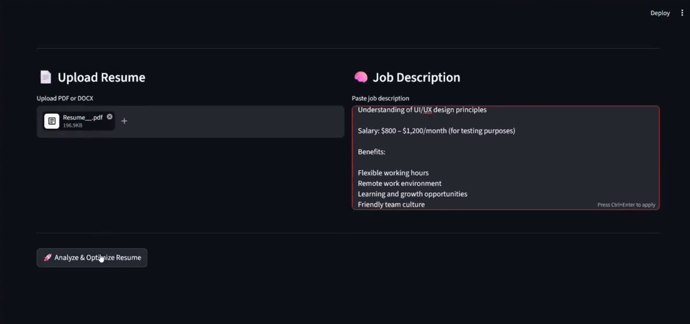
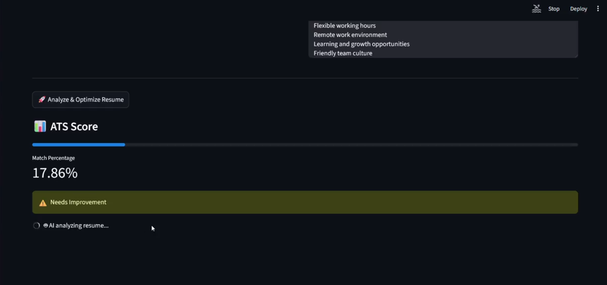

An intelligent ATS platform that uses AI to analyze resumes, rank candidates, and automate recruitment workflows. It helps HR teams filter applications faster and match candidates with job requirements more accurately.
Extracts key skills, experience and education from resumes automatically.
Ranks applicants based on job description matching score.
Filters candidates using AI-driven logic and keyword analysis.
Provides HR dashboard for managing applications efficiently.


